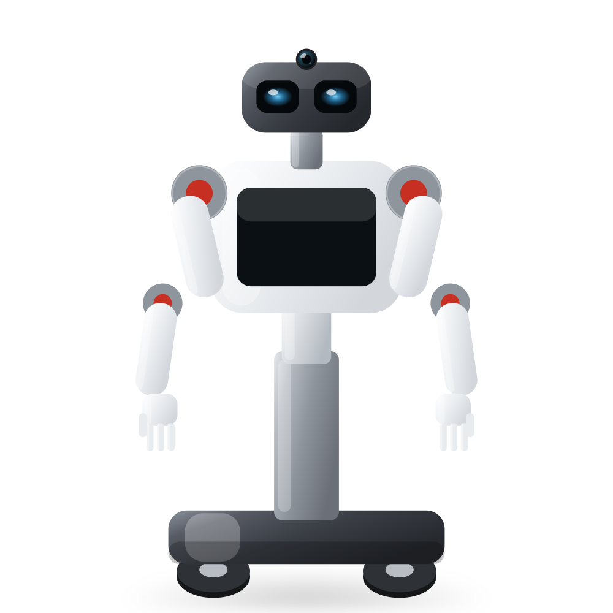
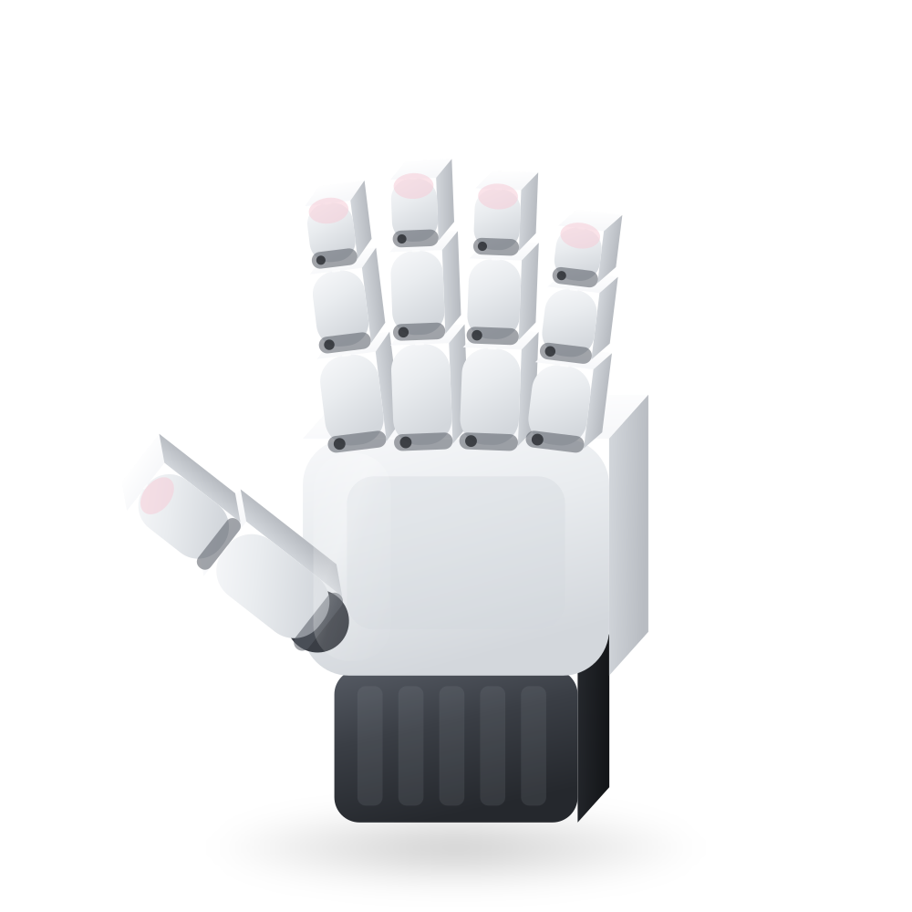
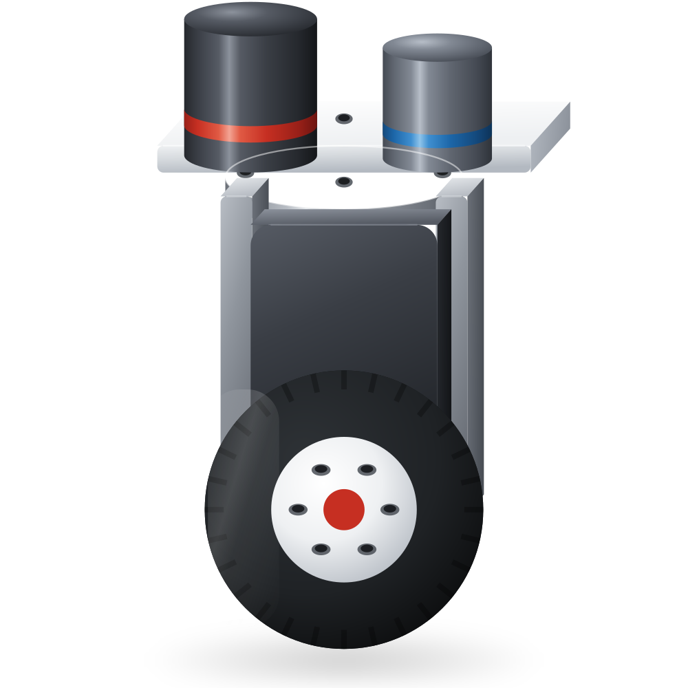
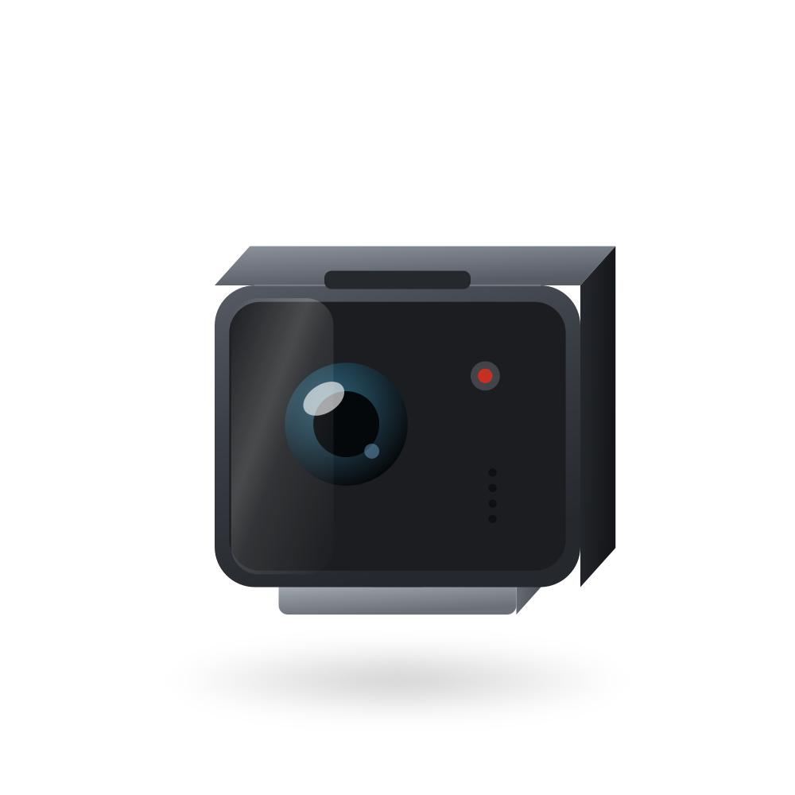

MABEL
Fifty-six degrees
of freedom.
A mobile bimanual research platform. Two 7-DOF arms, two 17-DOF tendon-driven hands, a holonomic swerve base, a lifting torso and an open stack from the CAN frames up to the policy.

Build it yourself, or let us build it.
The same robot either way. The difference is who spends the eighty hours, and who owns the knowledge at the end of them.
Developer Kit
$15,000
USD, before tax and shipping
- Every part, sorted into labelled subsystem boxes
- Structural parts arrive machined and 3D printed
- Swerve modules ship assembled and tested
- Illustrated build guide, CAD, firmware, ROS 2 stack, MuJoCo twin
- Two remote build sessions with our team
- You learn the machine well enough to modify it
Assembly: roughly 60–80 hours. Ships in 3–4 weeks.
MABEL, Assembled
$25,000
USD, before tax and shipping
- Built, wired and calibrated by the people who designed it
- Kinematic, camera and encoder calibration done and recorded
- Acceptance tested: drive, manipulate, teleoperate, record
- Ships in a reusable flight case with the tool roll
- Vision Pro teleoperation app configured to your account
- One year of hardware support and a half-day onboarding
Lead time 8–10 weeks. Collecting data the day it lands.
Configure your MABEL.
Two choices actually change how the robot behaves: how much memory the compute has, and how much detail the wrist cameras see.
Build
Onboard compute
The Jetson module is soldered to its board. You choose this once, at purchase — upgrading later means a new module and carrier.
Wrist cameras
Manipulation
Two arms that can feel what they touch.
Each arm is seven degrees of freedom of DAMIAO joint modules running in MIT impedance mode — position, velocity, stiffness, damping and feed-forward torque in a single CAN frame at 500 Hz. Dual encoders on every joint mean the controller knows where the output is, not just where the rotor is.
At the end of each arm, a 17-DOF ORCA hand: sixteen tendon-driven finger joints and a wrist, on Dyneema, with silicone fingertip pads you can replace when they wear.


Mobility
It can face one way and go another.
Three independent swerve modules, each with its own drive and steering motor and an absolute azimuth encoder. Heading and translation are decoupled, so MABEL can hold a camera on a subject while it drives around them — which is exactly what a manipulation demonstration usually needs.
A three-stage lift column and a 400 N·m torso joint take the workspace from the floor to a kitchen counter.
Teleoperation and data
Demonstrations, logged as you give them.
A custom Apple Vision Pro app maps your hands onto MABEL's, with the wrist and head camera feeds in front of you. Every session is timestamped and written straight into the episode format the training stack reads — so collecting data and using it are the same act.
Digital twins in MuJoCo and Isaac Lab share the same URDF, the same joint limits and the same controller, so a policy trained in simulation meets the robot it expects.

Tech Specs
Or buy one subsystem.
Questions people ask first.
Do I need a machine shop to build the kit?
No. Every structural part arrives finished — sheet metal cut, bent, tapped and with the hardware pressed in; printed parts printed. You need hand tools, a soldering iron for heat-set inserts, and patience. The tool roll we sell covers all of it.
What is actually open source?
The CAD, the firmware, the ROS 2 stack, the MuJoCo and Isaac Lab models, the build guide and the bill of materials, under MIT. You can build this robot from the public repository without buying anything from us. We sell the parts because sourcing them is the tedious part, not because the design is secret.
Which compute should I choose?
Memory is what binds, not TOPS. The policy, the visual SLAM front end, the planner and every camera stream have to be resident at once, and the Jetson module is soldered to its carrier. If your work involves a learned policy on board, take the 16 GB Orin NX. The 8 GB Orin Nano is enough for classical navigation and teleoperated data collection.
Can you ship outside Canada and the US?
Yes, worldwide, by freight for complete robots and by courier for parts. Duties and import taxes are the buyer's. Tell us the destination before ordering a robot and we will quote the crating and freight properly rather than guessing.
What support comes with it?
The kit includes two remote build sessions. An assembled robot includes a year of hardware support and a half-day onboarding. Beyond that, the documentation is public and the issue tracker is open — we answer there too.
Can I buy just one arm?
Yes. A single 7-DOF arm on a bench stand, a pair of ORCA hands, and individual swerve modules are all sold separately, and all run the same software as the full robot.